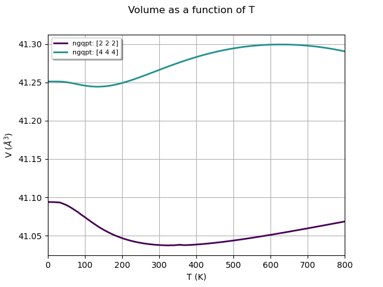

Note
Click here to download the full example code
Quasi-harmonic approximation (convergence wrt Q-mesh)¶
This example shows how to use the GSR.nc and PHDOS.nc files computed with different volumes to analyze the convergence of QHA thermodynamic properties with respect to the number of q-points used to compute the phonon DOS.
- 
Out:
/Users/gmatteo/miniconda3/envs/env3.9/lib/python3.9/site-packages/pymatgen/symmetry/kpath.py:179: UserWarning: The input structure does not match the expected standard primitive! The path can be incorrect. Use at your own risk.
warn(
/Users/gmatteo/miniconda3/envs/env3.9/lib/python3.9/site-packages/pymatgen/symmetry/kpath.py:179: UserWarning: The input structure does not match the expected standard primitive! The path can be incorrect. Use at your own risk.
warn(
/Users/gmatteo/miniconda3/envs/env3.9/lib/python3.9/site-packages/pymatgen/symmetry/kpath.py:179: UserWarning: The input structure does not match the expected standard primitive! The path can be incorrect. Use at your own risk.
warn(
/Users/gmatteo/miniconda3/envs/env3.9/lib/python3.9/site-packages/pymatgen/symmetry/kpath.py:179: UserWarning: The input structure does not match the expected standard primitive! The path can be incorrect. Use at your own risk.
warn(
/Users/gmatteo/miniconda3/envs/env3.9/lib/python3.9/site-packages/pymatgen/symmetry/kpath.py:179: UserWarning: The input structure does not match the expected standard primitive! The path can be incorrect. Use at your own risk.
warn(
/Users/gmatteo/miniconda3/envs/env3.9/lib/python3.9/site-packages/pymatgen/symmetry/kpath.py:179: UserWarning: The input structure does not match the expected standard primitive! The path can be incorrect. Use at your own risk.
warn(
/Users/gmatteo/miniconda3/envs/env3.9/lib/python3.9/site-packages/pymatgen/symmetry/kpath.py:179: UserWarning: The input structure does not match the expected standard primitive! The path can be incorrect. Use at your own risk.
warn(
/Users/gmatteo/miniconda3/envs/env3.9/lib/python3.9/site-packages/pymatgen/symmetry/kpath.py:179: UserWarning: The input structure does not match the expected standard primitive! The path can be incorrect. Use at your own risk.
warn(
/Users/gmatteo/miniconda3/envs/env3.9/lib/python3.9/site-packages/pymatgen/symmetry/kpath.py:179: UserWarning: The input structure does not match the expected standard primitive! The path can be incorrect. Use at your own risk.
warn(
<Figure size 640x480 with 1 Axes>
import os
import abipy.data as abidata
from abipy.dfpt.qha import QHAQmeshAnalyzer
# We use a list of GSR.nc and PHDOS.nc files corresponding to different isotropic strains.
# These files are shipped with AbiPy so that we don't need to run calculations from scratch.
#strains = [-4, -2, 0, 2, 4, 6]
strains = [-2, 0, 2, 4]
dirpath = os.path.join(abidata.dirpath, "refs", "si_qha")
gsr_paths = [os.path.join(dirpath, "mp-149_{:+d}_GSR.nc".format(s)) for s in strains]
ddb_paths = [os.path.join(dirpath, "mp-149_{:+d}_DDB".format(s)) for s in strains]
# Initialize QHA object from files.
qhana = QHAQmeshAnalyzer(gsr_paths, ddb_paths)
# To change the default EOS (vinet), use
#qhana.set_eos("vinet")
# Compute ph-DOS with this list of nqsmall values.
qhana.run_qlist([2, 4])
# Analyze convergence. API similar to QHA.
qhana.plot_energies(title="Energies as a function of volume for different T")
qhana.plot_thermal_expansion_coeff(title="Thermal expansion coefficient as a function of T")
qhana.plot_vol_vs_t(title="Volume as a function of T")
Total running time of the script: ( 0 minutes 23.534 seconds)